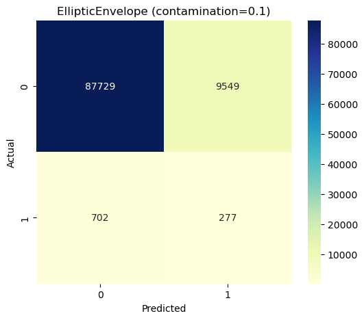
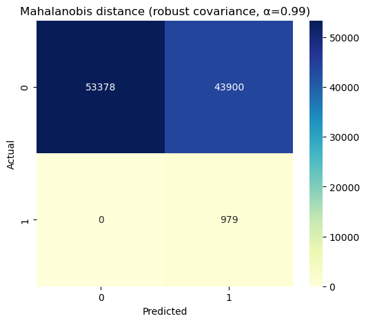

import warnings
warnings.filterwarnings("ignore")Week 03 — Statistical / Classical Anomaly Detection
- Z-Score
- Elliptic Envelope
- Local Outlier Factor
- DBSCAN
import os, sys
sys.path.append(os.path.abspath("..")) # from notebooks/ to project root
from src.utils import set_global_seed, Paths
set_global_seed()
print("Import OK.", Paths)Import OK. <class 'src.utils.Paths'># Set up imports and load the raw NSL-KDD data.
import os, sys
from pathlib import Path
import numpy as np
import pandas as pd
import matplotlib.pyplot as plt
import seaborn as sns
from sklearn.metrics import confusion_matrix
from src.utils import Paths, set_global_seed
from src.io import load_raw_nsl_kdd, map_attack_family
from src.unsupervised import (
make_binary_subset, z_score_feature, z_score_labels,
run_elliptic_envelope, run_mahalanobis,lof_grid_search, run_dbscan
)
paths = Paths().ensure()
set_global_seed(42)
# Load the same raw file used in Week 01.
raw_path = paths.data_raw / 'NSL-KDD.raw'
print('Loading raw data from:', raw_path)
df = load_raw_nsl_kdd(raw_path)
df = map_attack_family(df)
df.shapeLoading raw data from: C:\Users\mehra\Final_Project\data\raw\NSL-KDD.raw(494021, 43)# Create a binary subset: normal vs teardrop. (Mirror Chapter_2.)
df_bin = make_binary_subset(df, normal_label='normal', attack_label='teardrop')
df_bin['Label'].value_counts()Label
0 97278
1 979
Name: count, dtype: int64Z-Score rule on a single feature
We follow Chapter_2 and use the wrong_fragment feature with a threshold of |Z|>2 to flag anomalies (attacks).
# Compute Z-score for 'wrong_fragment' and map to labels using |Z| > 2.
z = z_score_feature(df_bin['wrong_fragment'])
df_bin['Z'] = z
df_bin['Z_Pred'] = z_score_labels(z, k=2.0)
cm_z = confusion_matrix(df_bin['Label'], df_bin['Z_Pred'])
plt.figure(figsize=(6,5))
sns.heatmap(cm_z, annot=True, fmt='d', cmap='YlGnBu')
plt.title('Z-Score rule on wrong_fragment (|Z|>2)')
plt.xlabel('Predicted')
plt.ylabel('Actual')
plt.show()
cm_z
array([[97278, 0],
[ 0, 979]])Elliptic Envelope (Robust covariance)
I use EllipticEnvelope with contamination=0.1 and random_state=0, dropping non-numeric / categorical columns
ell_res = run_elliptic_envelope(df_bin, contamination=0.1, random_state=0)
cm_ell = ell_res.confusion
plt.figure(figsize=(6,5))
sns.heatmap(cm_ell, annot=True, fmt='d', cmap='YlGnBu')
plt.title('EllipticEnvelope (contamination=0.1)')
plt.xlabel('Predicted')
plt.ylabel('Actual')
plt.show()
cm_ell
array([[87729, 9549],
[ 702, 277]])Mahalanobis distance with robust covariance
We now fit a robust covariance model (MinCovDet) on the same numeric feature space, compute squared Mahalanobis distances, and threshold them using the chi-square quantile at alpha = 0.99. Points with distance² above the threshold are treated as anomalies.
# Mahalanobis distance model. (Robust covariance + chi-square threshold.)
from src.unsupervised import run_mahalanobis
mahal_res = run_mahalanobis(df_bin, alpha=0.99, robust=True)
cm_mahal = mahal_res.confusion
print("Chi-square threshold (alpha=0.99):", mahal_res.threshold)
plt.figure(figsize=(6, 5))
sns.heatmap(cm_mahal, annot=True, fmt="d", cmap="YlGnBu")
plt.title("Mahalanobis distance (robust covariance, α=0.99)")
plt.xlabel("Predicted")
plt.ylabel("Actual")
plt.show()
cm_mahalChi-square threshold (alpha=0.99): 63.690739751564465
array([[53378, 43900],
[ 0, 979]])Local Outlier Factor (LOF)
First, I run a single LOF model with a modest neighborhood size; then, I grid search over k to inspect accuracy, precision, and recall as a function of the neighborhood size.
from sklearn.neighbors import LocalOutlierFactor
actual = df_bin['Label'].to_numpy()
drop_cols = [c for c in ['Label', 'label', 'target', 'protocol_type', 'service', 'flag', 'family'] if c in df_bin.columns]
X = df_bin.drop(columns=drop_cols)
k0 = 5
lof0 = LocalOutlierFactor(n_neighbors=k0, contamination=0.1)
pred0 = lof0.fit_predict(X)
pred0_rescored = np.where(pred0 == -1, 1, 0)
cm_lof0 = confusion_matrix(actual, pred0_rescored)
plt.figure(figsize=(6,5))
sns.heatmap(cm_lof0, annot=True, fmt='d', cmap='YlGnBu')
plt.title(f'LOF (k={k0}, contamination=0.1)')
plt.xlabel('Predicted')
plt.ylabel('Actual')
plt.show()
cm_lof0array([[87465, 9813],
[ 966, 13]])# Grid search over k for LOF
k_values = list(range(100, 1501, 100)) # 100, 200, ..., 3000
lof_grid = lof_grid_search(df_bin, k_values)
plt.figure(figsize=(8,5))
plt.plot(lof_grid.ks, lof_grid.accuracies, label='Accuracy')
plt.plot(lof_grid.ks, lof_grid.precisions, label='Precision')
plt.plot(lof_grid.ks, lof_grid.recalls, label='Recall')
plt.xlabel('k (n_neighbors)')
plt.ylabel('Metric (%)')
plt.title('LOF metrics vs k')
plt.legend()
plt.grid(True, alpha=0.3)
plt.show()
DBSCAN
I run DBSCAN with eps=0.2 and min_samples=5 on the same feature space, rescoring cluster labels so that noise points are treated as anomalies.
db_res = run_dbscan(df_bin, eps=0.2, min_samples=5)
cm_db = db_res.confusion
plt.figure(figsize=(6,5))
sns.heatmap(cm_db, annot=True, fmt='d', cmap='YlGnBu')
plt.title('DBSCAN (eps=0.2, min_samples=5)')
plt.xlabel('Predicted')
plt.ylabel('Actual')
plt.show()
cm_db
array([[11475, 85803],
[ 0, 979]])# Save anomaly detection results for Week 05
import numpy as np
import pandas as pd
from pathlib import Path
from src.utils import Paths
paths = Paths().ensure()
# Determine project root and reports directory
this_dir = Path.cwd()
project_root = this_dir.parent if this_dir.name == "notebooks" else this_dir
reports_root = getattr(paths, "reports", project_root / "reports")
wk3_dir = reports_root / "week_03"
wk3_dir.mkdir(parents=True, exist_ok=True)
frames = []
# 1) Z-SCORE MODEL
if {"Label", "Z", "Z_Pred"}.issubset(df_bin.columns):
z_df = pd.DataFrame({
"model": "Z-Score (wrong_fragment, |Z|>2)",
"y_true_bin": df_bin["Label"].astype(int).to_numpy(),
"y_pred_bin": df_bin["Z_Pred"].astype(int).to_numpy(),
# Score: |Z| (higher = more anomalous)
"score": np.abs(df_bin["Z"]).to_numpy(),
})
frames.append(z_df)
print("Added Z-Score results.")
else:
print("Z-score fields not found. Skipping Z-score model.")
# Helper function to add result objects
def add_res_object(name):
obj = globals().get(name, None)
if obj is None:
print(f"{name} not found, skipping.")
return
needed = ["name", "y_true", "y_pred", "scores"]
missing = [a for a in needed if not hasattr(obj, a)]
if missing:
print(f"{name} missing attributes {missing}, skipping.")
return
df = pd.DataFrame({
"model": obj.name,
"y_true_bin": np.array(obj.y_true).astype(int),
"y_pred_bin": np.array(obj.y_pred).astype(int),
"score": np.array(obj.scores).astype(float),
})
frames.append(df)
print(f"Added results for {obj.name}.")
# Elliptic Envelope
# Mahalanobis
# LOF
# DBSCAN
add_res_object("ell_res")
add_res_object("mahal_res")
add_res_object("lof0")
add_res_object("db_res")
# Save all results
if not frames:
raise ValueError("No Week 03 results found. Run the model cells first.")
unsup_df = pd.concat(frames, ignore_index=True)
csv_path = wk3_dir / "week03_unsupervised_predictions.csv"
unsup_df.to_csv(csv_path, index=False)
print("\nSaved Week 03 anomaly detection results:")
print(" -", csv_path)
unsup_df.head()Added Z-Score results.
ell_res missing attributes ['name', 'y_true', 'y_pred', 'scores'], skipping.
mahal_res missing attributes ['name', 'y_true', 'y_pred', 'scores'], skipping.
lof0 missing attributes ['name', 'y_true', 'y_pred', 'scores'], skipping.
db_res missing attributes ['name', 'y_true', 'y_pred', 'scores'], skipping.
Saved Week 03 anomaly detection results:
- C:\Users\mehra\Final_Project\reports\week_03\week03_unsupervised_predictions.csv
- C:\Users\mehra\Final_Project\reports\week_03\week03_unsupervised_predictions.parquet| model | y_true_bin | y_pred_bin | score | |
|---|---|---|---|---|
| 0 | Z-Score (wrong_fragment, |Z|>2) | 0 | 0 | 0.100112 |
| 1 | Z-Score (wrong_fragment, |Z|>2) | 0 | 0 | 0.100112 |
| 2 | Z-Score (wrong_fragment, |Z|>2) | 0 | 0 | 0.100112 |
| 3 | Z-Score (wrong_fragment, |Z|>2) | 0 | 0 | 0.100112 |
| 4 | Z-Score (wrong_fragment, |Z|>2) | 0 | 0 | 0.100112 |